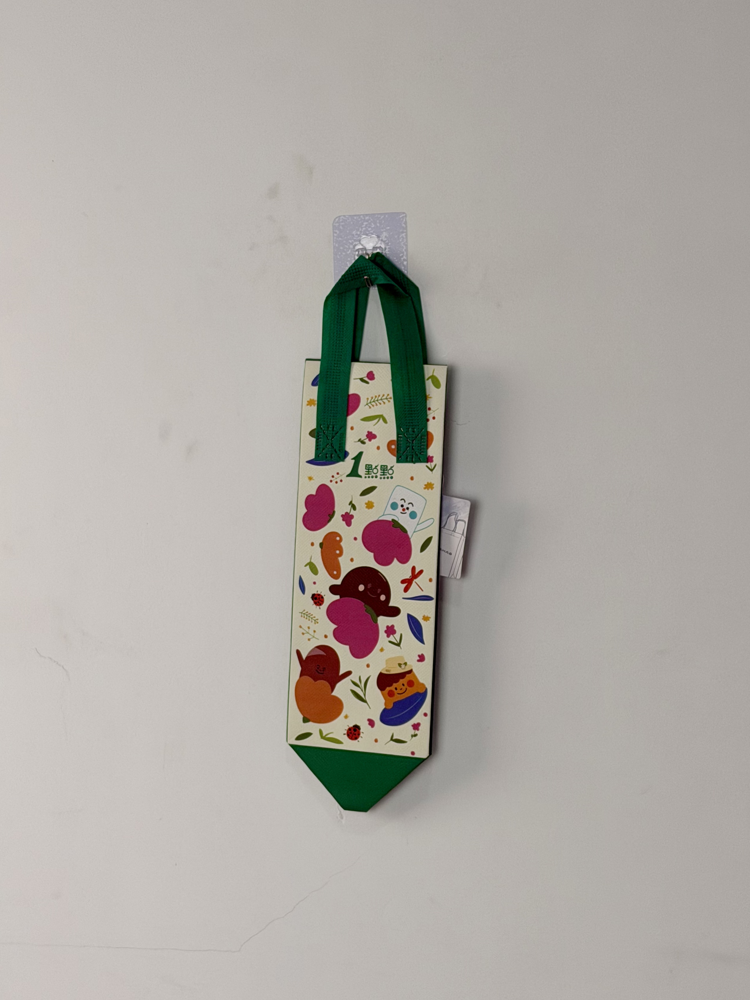

A whimsical single-bottle tote designed for A Little Tea, featuring playful fruit-and-boba character illustrations and a two-tone cream-and-green palette that turns a functional drink carrier into a collectible accessory.

A Little Tea is one of Taiwan's most recognizable bubble-tea chains, with over 3,000 locations across Asia and expanding into North America and Europe. Founded in 1994, the brand built its reputation on customizable freshly brewed teas with a signature "secret menu" culture. In an increasingly crowded bubble-tea market where competitors fight on price and speed, A Little Tea identified packaging as a critical differentiator — particularly for the takeout and delivery orders that now represent over 60% of total sales.
Our customers don't just buy a drink — they buy a moment worth sharing. The bag has to be cute enough to photograph.
The project brief called for a single-cup carrier that could accommodate the brand's large-format cups (700ml) while delivering emotional impact through illustration. Unlike utilitarian drink carriers that customers discard immediately, A Little Tea wanted a bag that would be kept, reused, and most importantly — shared on social media.
The creative direction embraced "kawaii" aesthetics — soft rounded forms, pastel color fields, and anthropomorphic food characters. The illustration features a cast of fruit-and-boba mascots (strawberry, orange, boba pearls, and milk tea) interacting in a playful garden scene. This narrative approach transforms the bag from a disposable container into a miniature artwork that customers actively want to collect.
Anthropomorphic fruit and boba mascots create emotional attachment and collectibility across seasonal releases.
Cream upper panel maximizes illustration vibrancy while the green base and handles reinforce brand color identity.
Narrow vertical format (10cm width) designed specifically for 700ml bubble-tea cups with straw clearance.
Illustration scale and color saturation optimized for smartphone photography and Instagram Story framing.
Bubble-tea carry bags face unique mechanical challenges: they must securely hold tall, relatively heavy cups (500-700g when full) while remaining visually lightweight. The design solution combines a narrow footprint with deep vertical proportions and reinforced handle attachments calibrated for liquid loads.
| Parameter | Specification | Test Standard |
|---|---|---|
| Load Capacity | 3 kg | ASTM D5265 |
| Cup Fit Range | 500ml - 700ml diameter | Internal Protocol |
| Color Fastness | Grade 4-5 | ISO 105-B02 |
| Handle Pull Strength | > 25 N/cm | ASTM D5034 |
Bubble-tea packaging operates on seasonal release cycles, requiring rapid production turnaround for limited-edition designs. This bag was produced in a streamlined four-stage workflow optimized for small-batch flexibility and color accuracy on pastel substrates.
Cream and green non-woven fabrics produced with masterbatch color matching. Pantone confirmation within Delta E < 1.5 for brand consistency.
Roll-to-roll gravure CMYK on cream panel. Special attention to pastel gradient fidelity and fine-line character detail reproduction.
Printed cream upper panel sewn to green lower panel and base. Angled bottom geometry cut with ultrasonic sealing for clean edges.
Woven green handles attached with cross-stitch reinforcement. 100% visual inspection for print defects and seam alignment.
The carry bag launched as part of A Little Tea's summer fruit-tea campaign across Greater China, distributed with every takeout and delivery order. The character-driven design immediately resonated with the brand's core demographic of 18-28 year old female consumers.
Key Insight: Consumer behavior analysis revealed that 34% of customers specifically requested the "character bag" when placing orders, demonstrating that packaging design had become a tangible driver of purchase intent rather than a passive cost center.
Beyond the initial campaign, the bag's practical dimensions made it ideal for reuse as a water-bottle carrier, umbrella sleeve, and gift bag. This extended utility transformed a single-use drink carrier into a multi-purpose accessory that generated brand impressions for months after the original purchase.
Three design decisions differentiate this bubble-tea carrier from generic drink bags. Each leverages specific psychological and behavioral patterns observed in A Little Tea's target market.
By creating distinct fruit-and-boba mascots rather than abstract patterns, the design triggers the same collection psychology that drives toy blind-box culture. Customers actively seek to acquire bags featuring their favorite characters.
Printing on cream rather than white allows pastel colors to read as soft and warm rather than washed-out. This subtle substrate choice significantly improves the perceived quality of the illustration.
The 10cm width creates a distinctive silhouette that stands out in social-media feeds where wider totes blend together. The unusual proportion becomes a visual signature for the brand.
We design and manufacture character-driven drink carriers, bubble-tea bags, and food-service packaging for brands across Asia and beyond. From illustration to final stitch, we handle the full creative-to-production pipeline.